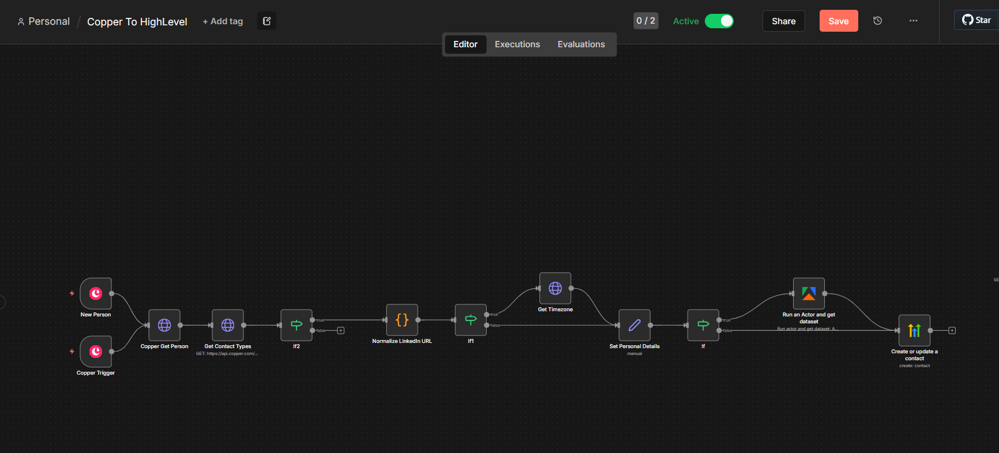

Systems that quietly run your business.
I help agencies and growing businesses build streamlined CRM systems, conversion-focused funnels, and automated customer journeys using GoHighLevel.

Live builds, crafted.
Live website builds in the GoHighLevel site builder, each wired to capture leads into the CRM.
The workflows behind the work.
Triggers, waits, branches and clean handoffs, the patterns I build from.
What I can build for you.
Everything inside GoHighLevel, from first lead capture to the automated follow-up that turns enquiries into booked calls.
How I approach projects.
Understand the business first
Before touching GHL, I map how leads actually arrive, what follow-up looks like today, and where things fall through. Automation that ignores the real process just automates the mess.
Build in small, testable pieces
Workflows, pipelines, and integrations go live one piece at a time, each tested end-to-end with real scenarios before the next layer goes on.
Document and hand over
Every build comes with a plain-English explanation of what fires when, and why, so your team can run and adjust the system without me on retainer forever.
Have a GHL project in mind?
Tell me what you’re trying to automate or fix, and I’ll tell you honestly whether and how GHL can do it.
Start a conversation